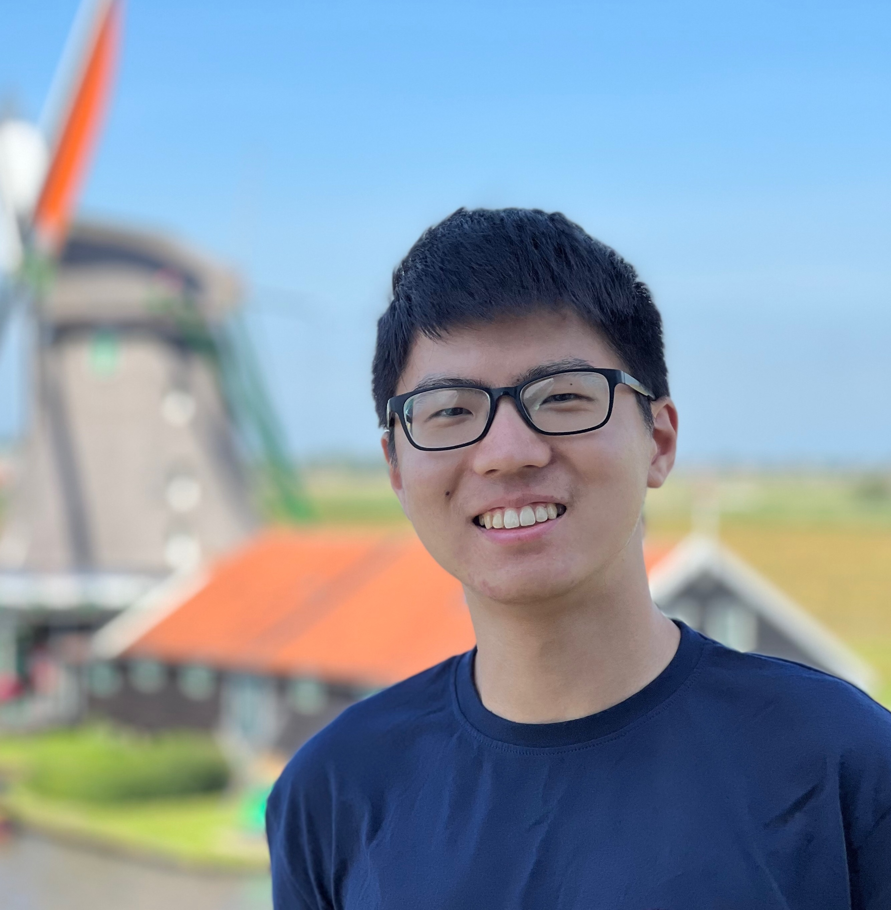

Qizheng Zhang

Computer Science PhD student, Stanford University
qizhengz {at} stanford {dot} edu
I am a fifth-year CS Ph.D. student at Stanford University. I am a member of Stanford Pervasive Parallelism Lab and my advisor is Kunle Olukotun. I have also been working with James Zou, Junchen Jiang, and Muhammad Shahbaz. I obtained my Bachelor's degree from the University of Chicago, with three majors in computer science, mathematics, and statistics.
I build AI systems that continuously learn from experience and improve over time (a topic known as recursive self-improvement), e.g. Caravan [OSDI 2024], Agentic Plan Caching [NeurIPS 2025], Agentic Context Engineering (ACE) [ICLR 2026], Meta-Harness [COLM 2026]. My interests span systems and frameworks, algorithms, and evaluation. Earlier, I had also worked on LLM inference infrastructure as part of the LMCache project, e.g. CacheGen [SIGCOMM 2024], CacheBlend [EuroSys 2025 Best Paper].
I have collaborated extensively with industry partners such as SambaNova Systems, Tensormesh, Eigent AI, and Microsoft Research. My research has also made it into production, with ACE deployed at Anyshift and SCX.ai.
In a previous life, I worked on computer networking and operating systems. I had a lot of fun hacking OS kernels and building low-latency network transport for video streaming.
The pronunciation of my first name (Qizheng) is very close to that of “keygen” in public key encryption. I also go by Alex.
Last updated: September 2026